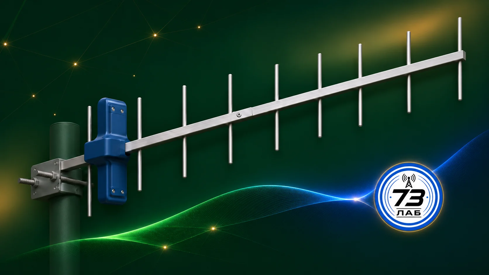

Розыгрыши по радиоданным MeshCore
MeshDraw рассчитывает результат по заранее опубликованным правилам и данным радиосети. Любой желающий может самостоятельно проверить результат.
Смотреть архивТекущие и предстоящие конкурсы
Новые конкурсы появятся здесь после анонса.
Архив конкурсов
Другие завершённые конкурсы
Как работает MeshDraw
Перед розыгрышем публикуются план и список билетов. После него доступны результат, входные данные и код верификатора. Проверка показывает, совпадает ли опубликованный результат с расчётом по этому пакету.